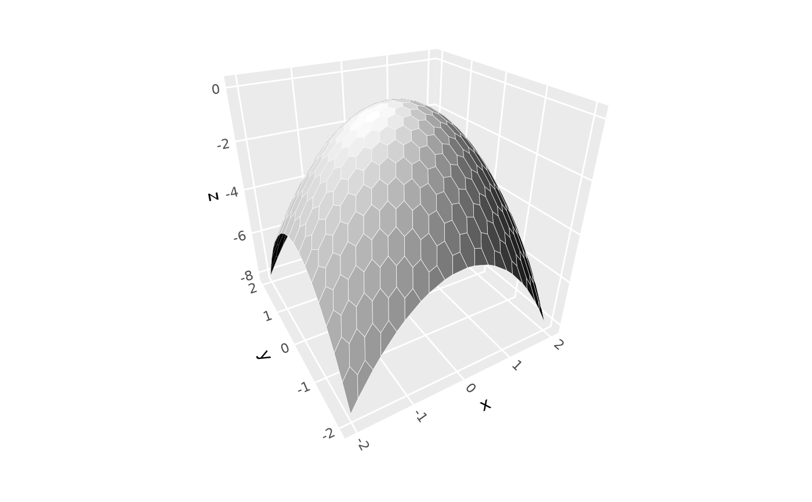

Creates a regular grid of tiles of specified resolution and geometry.
This function is called by various ggcube stats that generate surfaces, but can
also be used directly. Returns tile vertex data formatted for geoms like
geom_poygon() and geom_poygon_3d().
Arguments
- grid
Character argument specifying geometry of grid to generate. Options include
"rect"(the default) for rectangular grid,"tri"for triangular grid, or"hex"for hexagonal grid.- n
Either a single integer specifying grid resolution in both dimensions, or a vector of length 2 specifying
c(nx, ny)for separate x and y resolutions. Default is40. Higher values create smoother surfaces but slower rendering.- direction
Either
"x"(the default) or"y", specifying the orientation of tile rows. Ignored for rectangular grids.- xlim, ylim
Length-two numeric vectors defining bounding box over which to generate the grid.
Value
A data frame with the following columns: x, y, group (integer denoting
unique polygon id), and order (integer giving vertex order for plotting; vertices
are in counter-clockwise winding order).
Details
Grids are constructed such that tiles are approximately equilateral
when scaled to a square domain, unless n gives separate resolution values
for the two dimensions. For triangular and hexagonal grids, this means that
n is only approximate.
See also
stat_function_3d(), stat_smooth_3d(), and stat_density_3d() for ggcube layers that
use make_tile_grid() to generate gridded surfaces.
Examples
# direct use
g <- make_tile_grid("tri", xlim = c(0, 5), ylim = c(-100, 100))
head(g)
#> # A tibble: 6 × 4
#> group x y order
#> <int> <dbl> <dbl> <int>
#> 1 1 0.0806 -100 1
#> 2 1 0.161 -94.3 2
#> 3 1 0 -94.3 3
#> 4 2 0.0806 -100 1
#> 5 2 0.242 -100 2
#> 6 2 0.161 -94.3 3
# use from within ggcube stat
ggplot() +
stat_function_3d(
grid = "hex", n = 20, xlim = c(-2, 2), ylim = c(-2, 2),
fun = function(x, y) - x^2 - y^2,
fill = "black", color = "white", light = NULL) +
coord_3d()
